- @lamw Safe travels! Thanks for the great environment and fun at the #VMworldHackathon
- ... I kept telling people it was the standout event of last year, this year was even better! https://twitter.com/lamw/status/907447396401115136 …
- @lamw @JuliaBKlaus @ericnipro Thank YOU William and @alanrenouf and the rest of the team for the hard work. Our pleasure!
- Knew I should have gone to the #VMworldHackathon...no 1 from VMware that I know is at Rubrik / Nutanix Party #VMworld #itwasclosetothehotel
- @alanrenouf @marc_smith @VMware @VMworld @PGelsinger @theCUBE @rubrikInc @Cohesity @DellEMC @PureStorageUK Hey, #VMworldHackathon made it into the top hashtags (G1). #VMworld
- VMworld 2017 Europe HaVMworldHackathon https://youtu.be/h9QUKVne14I
- VMworld Hackathon 2017 BarcelonaVMworldHackathon https://youtu.be/5AmWgn9XzGE VMworldEurope2017VMworld
- Just want to give HUGE thanks to @vmwarecode team, #VMworldHackathon wouldn’t be possible w/o them! Drop by... http://bit.ly/2f5w5bn
- @vmwarecode My kids had a blast seeing their Lego clock on the #VMworldHackathon video! Thanks! This will certainly motivate for future STEM projects.
- All the chatter about #VMworldHackathon makes me wish we could do it multiple times throughout the year! Something to beg @vmwarecode for!
- So awesome to hear! It was a first time for many other folks & similiar comments as well for their first #VMworldHackathon /cc @vmwarecode https://twitter.com/AtherBeg/status/907449588696707072 …
- It was my first #VMworldHackathon Learnt and enjoyed a lot. Thank you @lamw @alanrenouf @ericnipro and everyone who arranged/participated
- Gr8 night once again. Thank you all @vmwarecode @lamw @alanrenouf .Now we have to wait 1 more year for the next episode of #VMworldHackathon https://twitter.com/vmwarecode/status/907361751469092864 …
- Thanks to everyone who attended the #VMworldHackathon tonight, it was great fun to see everything that was achieved! #VMworld https://twitter.com/vmwarecode/status/907361751469092864 …
- Had an absolute blast, can we do it again before next year, please? #VMworldHackathon
- 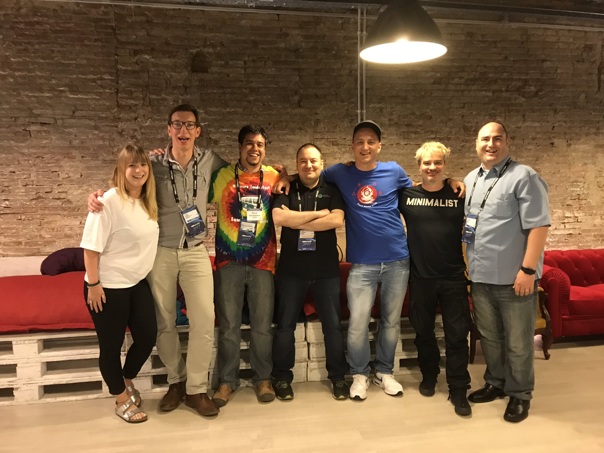Wow, third place for team 3 at the #VMworldHackathon and won a Echo Dot as a spot prize, #vmworld just keeps getting better! pic.twitter.com/PVuMAe3f1J
- 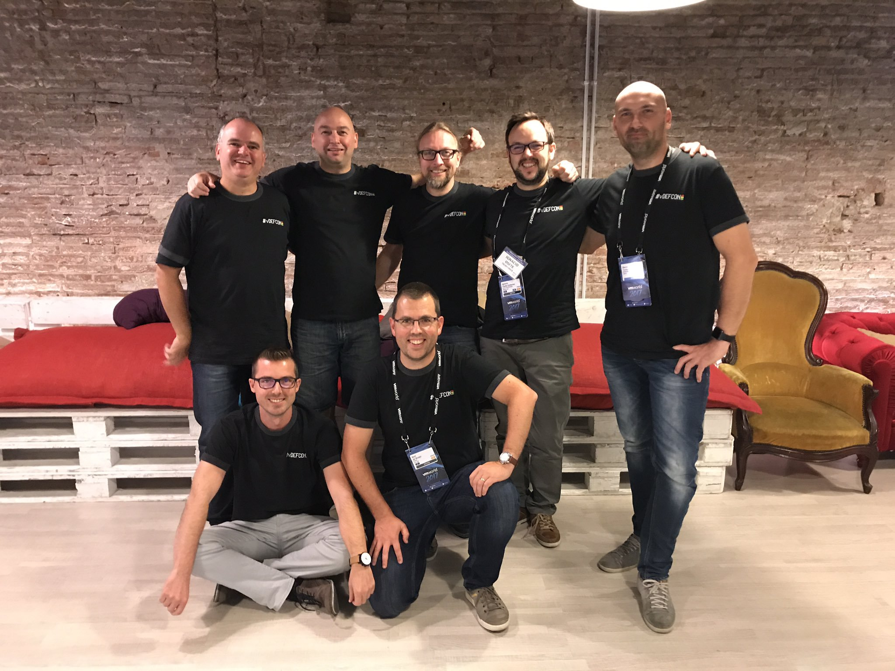2nd place at #vmworld #VMworldHackathon, was amazing team, not only fun tonight but also the past week prepping. Thanks guys!!!! #vDefcon pic.twitter.com/bB4d52Xrh6
- 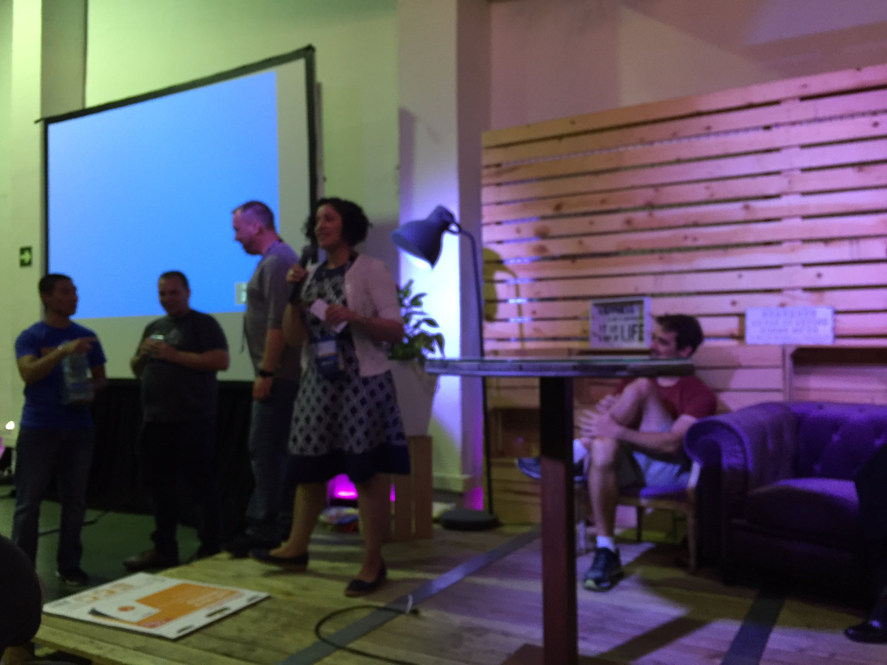#VMworldHackathon was immense fun! Thanks for the great evening! Team Automation for All rocked! pic.twitter.com/vyOBNhIUo6
- 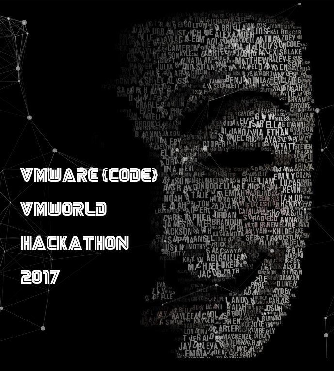Security for Fun & Beer - Team 6 - #VMworld2017 #VMworldHackathon #NSX #MicroSegmentation #Globalteam #newbie #nerd Great fun :) pic.twitter.com/Ukm9KBuQXO
- 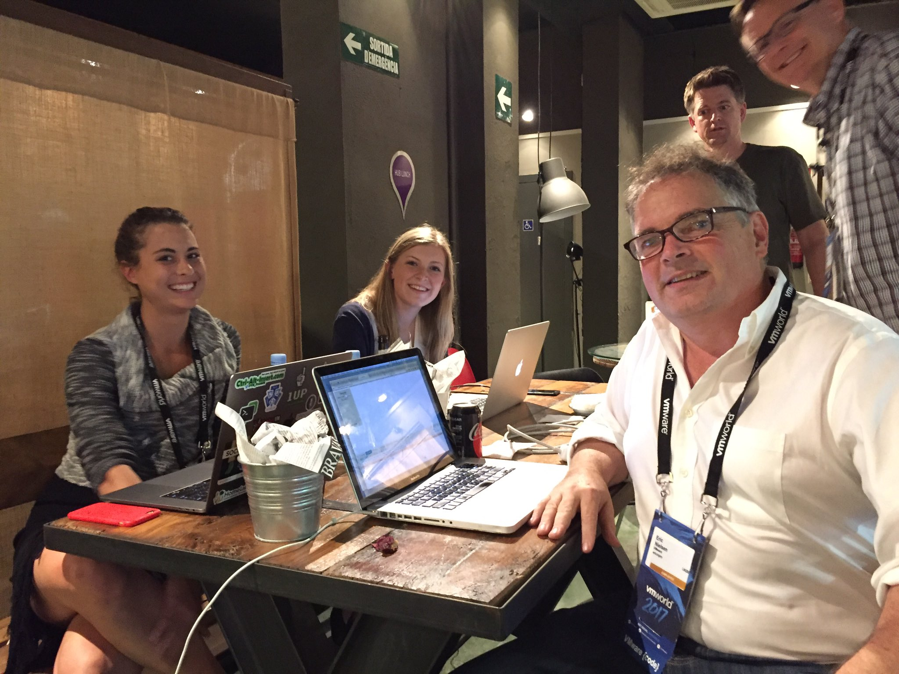How cool is this!? The @vmwarecode team is doing their own little mini-Hackathon in back! Should join next year! #Team11 #VMworldHackathon pic.twitter.com/17gfvTfmIk
- 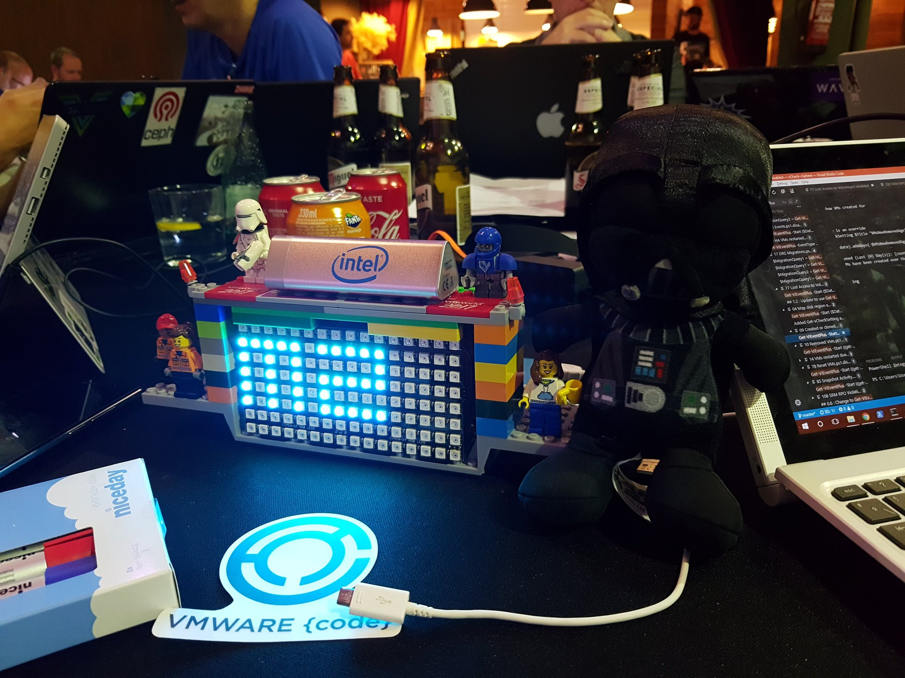VMware, Lego, StarWars and PowerCLI... How could it get any better? ;) #VMworldHackathon pic.twitter.com/lAvy0tCqx0
- 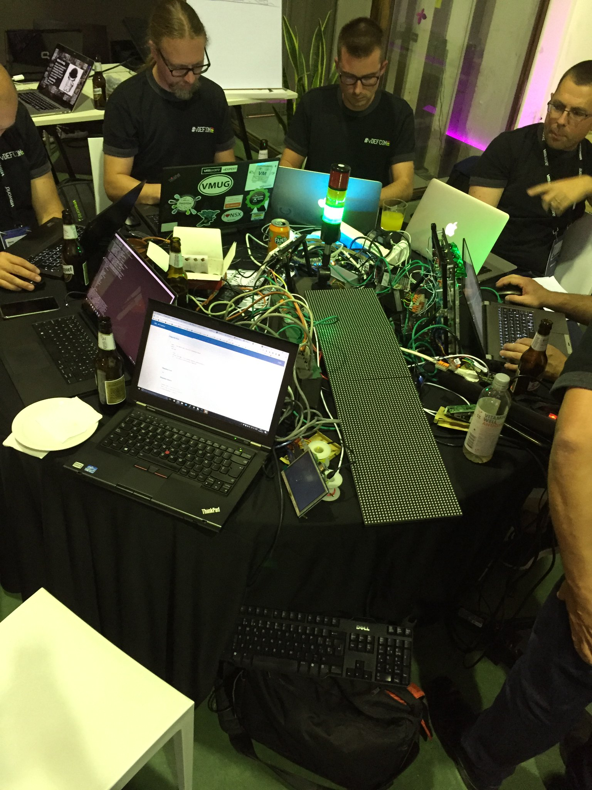Some really cool (and/or shady) things going on at the @vmwarecode #VMworldHackathon - Look for our coverage tomorrow! pic.twitter.com/n9w9NOhhtt
- 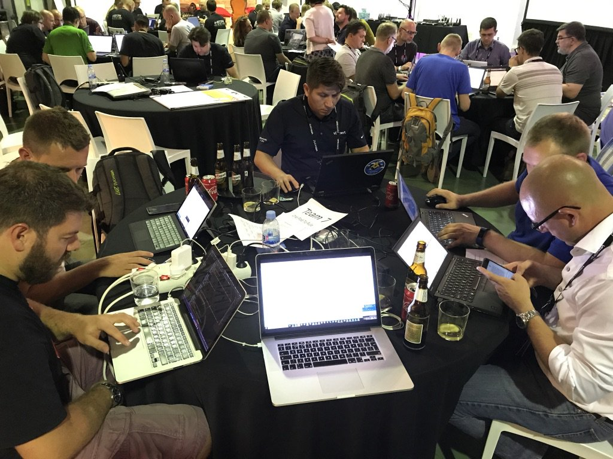Really enjoying the #VMWorldHackathon my team members of Team 7 (One Pod to rule them all) hard at it. pic.twitter.com/oD4thAUkEX
- 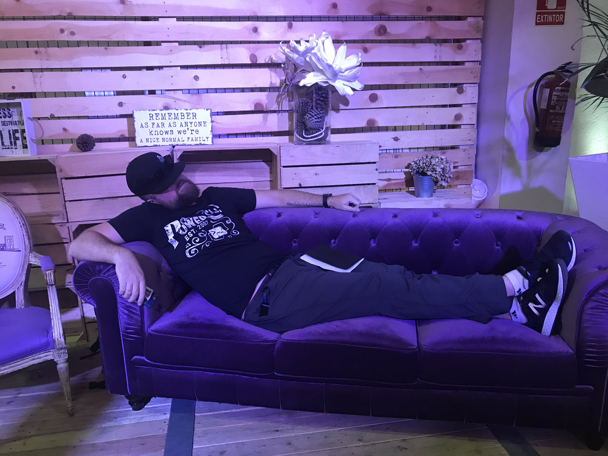@jakerobinson is taking his judging role very serious at #VMworldHackathon #vmworld pic.twitter.com/qDVxrdYhWT
- It is alive ! #VMworldHackathon team 8 - #vDefcon @the_anykey @alanrenouf @ignosgt @larstr @bert_db @koit12 @woueb pic.twitter.com/7ECRBRQCGn
- 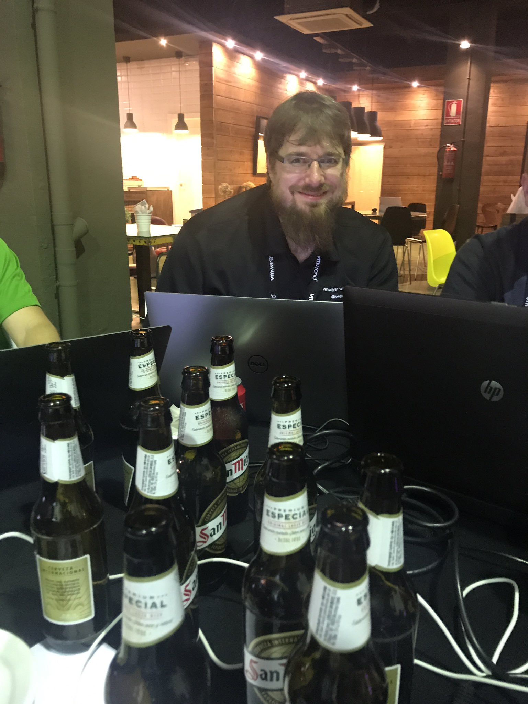@joerglew is doing the one beer per workflow rule at #VMworldHackathon bonus points! pic.twitter.com/faCC8QpgjQ
- Made it ! API webserver to set status light using flask and adafruit library. #VMworldHackathon Thanks @mcowger for python intro 🎉😋 pic.twitter.com/7M6ks463oE
- 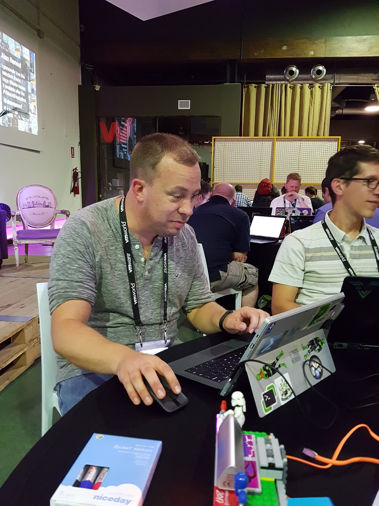@LucD22 @alanrenouf I might have catched the culprit! ;) #VMworldHackathon pic.twitter.com/YC8yl4O1sL
- Loving Team 2's Lego LED display system #VMworldHackathon #vmworld @vmwarecode pic.twitter.com/XBm4KagA3g
- Gutted to not be at the #VMworldHackathon this evening! Looks like a great turn out and look forward to the write ups!
- 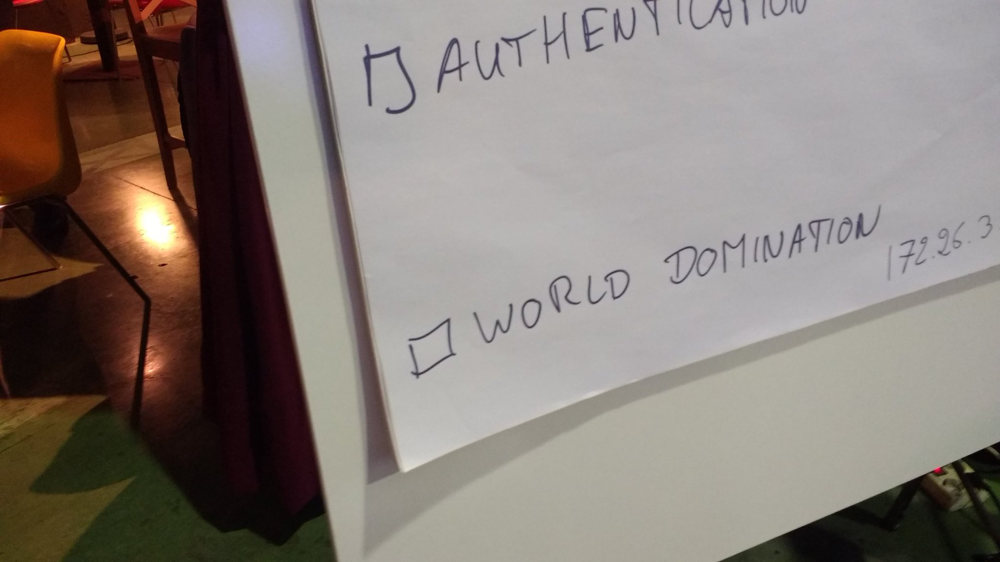There's no small objectives at the #VMworldHackathon pic.twitter.com/JIuckre03K
- 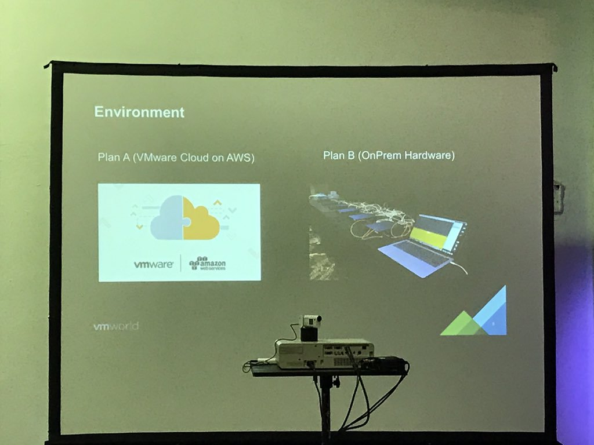@DuncanYB @Lost_Signal Coolio! Choice between #VMWonAWS and on-prem. #VMworldHackathon #VMworld pic.twitter.com/RyuqWT2NGj
- Let's get this @vmwarecode #VMworldHackathon started! Cool venue - participants on left, spectators on right pic.twitter.com/YR2atbm7fG
- Wished that I had caught a #vbrownBag live at #VMworld. Had an awesome team lead for the #VMworldHackathon in @brianbunke https://twitter.com/brianbunke/status/905063319915995138 …
- "When given the opportunity, jump in with both feet and take risks to get outside your comfort zone" @vmwarecode's #VMworldHackathon mantra! https://twitter.com/Networknerd_/status/903325013377351684 …
- @arielsanchezmor @vmwarecode #VMworldHackathon really help to reset my expectations of the community for the better. It's one of the best memories of #VMworld2017.
- 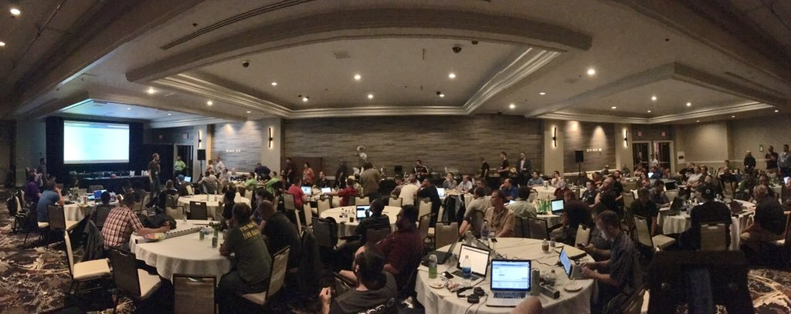@alanrenouf Fun to be there this year with @alanrenouf and @lamw #VMworldHackathon 2017 pic.twitter.com/t3P7wI9Nru
- Big thank you to @alanrenouf and @lamw for their work arranging the #VMworldHackathon #vmworld https://community.spiceworks.com/topic/2039632-vmworld-notebook-an-inside-look-at-the-vmworld-hackathon …
- @vmwarecode #VMworldHackathon US looks so awesome. After so cool US event, maybe @PGelsinger schould apply to be judged for EU #VMworldHackathon
- Thanks for the fun #VMworldHackathon @lamw and @alanrenouf! We're all old enough to know what life with no internet is like so it's ok. :)
- 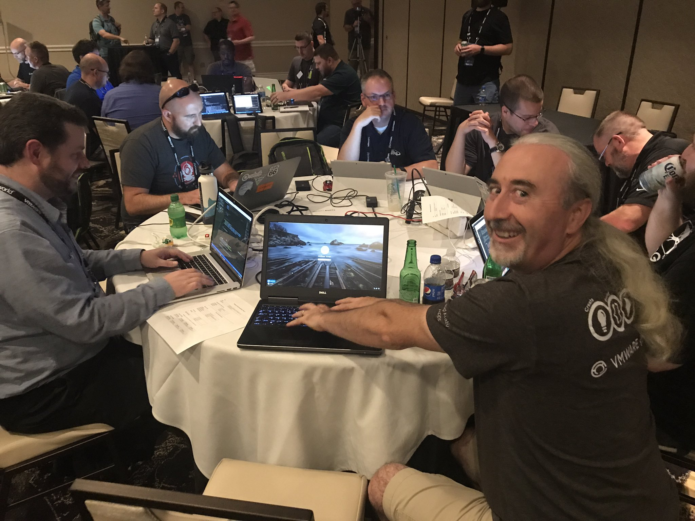Next year at the #VMworldhackathon we may need to teach @CormacJHogan how to unlock his laptop before coding! pic.twitter.com/hamCRhZw5u
- Late night at #VMworldHackathon. Made my first github commit and learned how to use Vester with Team "See My Vest! #vmworld https://twitter.com/brianbunke/status/902395257140133888 …
- My first #VMworldHackathon! Awesome experience @alanrenouf and @lamw! Must do it again next year, it'll become a pivotal part of #VMworld!
- 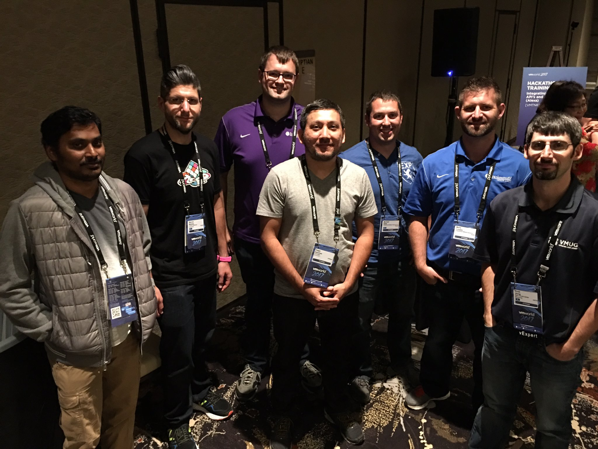Had a great time at the VMworld Hackathon again this year! Awesome team! #VMworldHackathon #VMworld2017 pic.twitter.com/7sssS1dDGm
- @vmwarecode #VMworldHackathon was a great experience. Looking forward to next year.
- 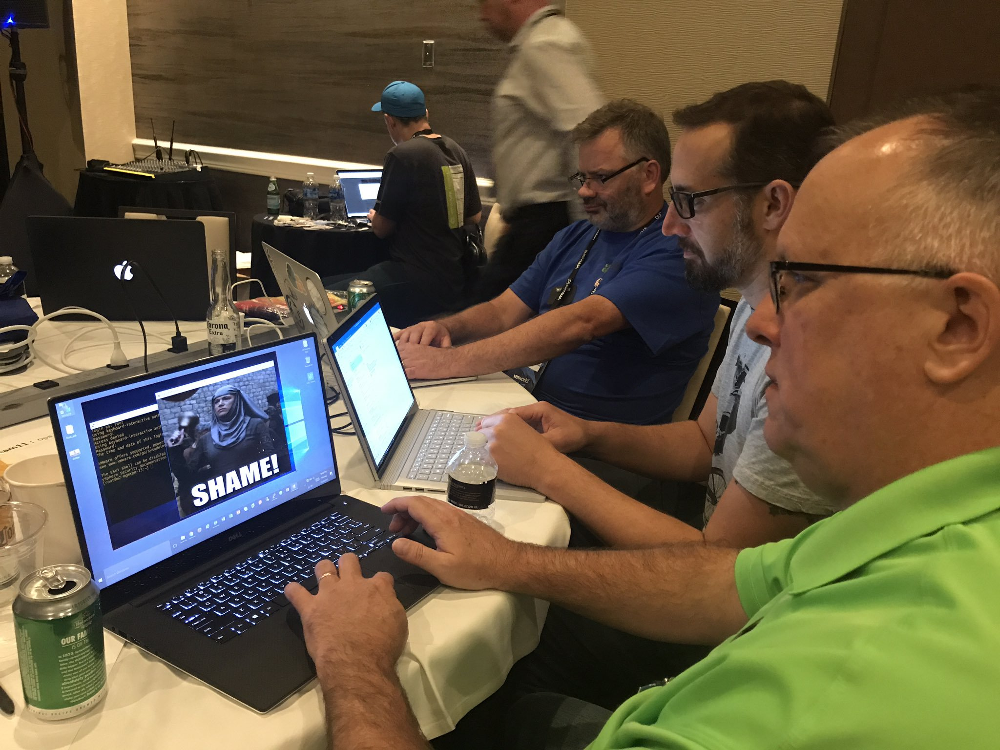Team Ops Ninjas bringing shame to those who use root. #VMworldhackathon @Sunny_Dua @johnddias @smflanders #vmworld pic.twitter.com/vln7yNo7m7
- Thanks to @alanrenouf @lamw for putting on the #VMworldHackathon -- team @WavefrontHQ fizzled but got an intro into a very cool product!
- 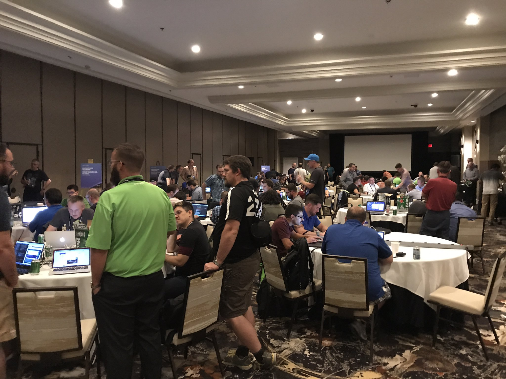A very vibrant and busy crowd during the @VMworld #VMworldHackathon and shows a great community with everyone helping #greatideas pic.twitter.com/ldPORKEgf4
- 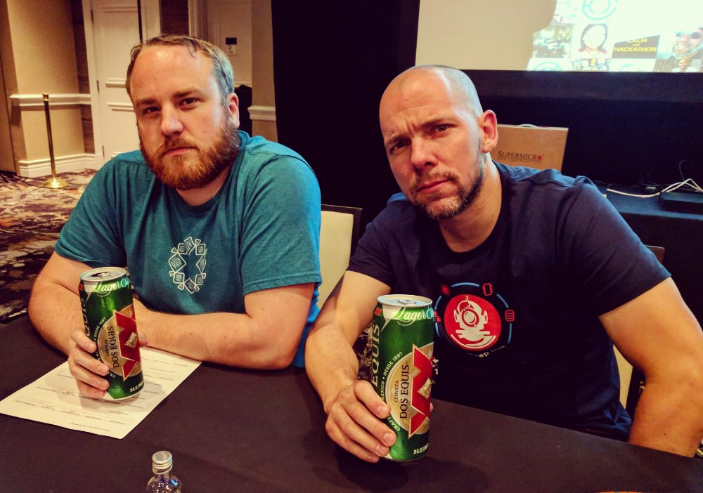